牛市评分分析
更新于: --
牛市概率评分
当前评分
70.4 / 100
牛市早中期概率上升
这个分数不是牛市确认书，而是用五层数据框架持续观察市场是否正在从冷态进入修复和扩散阶段。
评分拆解
| 模块 | 权重 | 得分 | 核心证据 |
|---|---|---|---|
| 全球 AI 重估 | 20 | 20.0 | 2023以来AI受益市场平均涨幅约 156.6%，中证500约 44.0%。 |
| 国内宏观修复 | 20 | 17.0 | 2026-04-01 CPI 1.2%，PPI 2.8%，PMI 50.3，M1-M2 -3.6pct。 |
| 流动性活化 | 20 | 14.3 | 2026-05-21 近20日融资买入额/成交金额约 22.53%，疫情前均值 17.93%。 |
| 市场宽度扩散 | 20 | 4.5 | 2026-05-22 中证800 MA20宽度约 29%，60日创新高 17 只。 |
| 估值与情绪空间 | 20 | 14.6 | 2026-05-22 10年国债 1.75%，沪深300股债收益差 5.14，中证500 1.70。 |
牛市概率评分图
五个模块各占 20 分。单次评分不重要，连续变化才重要。
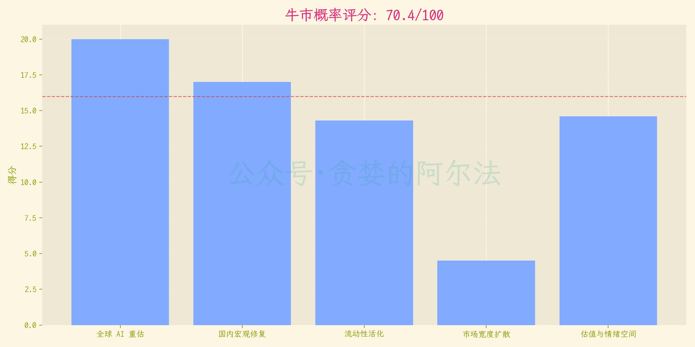
第一层：全球 AI 重估坐标系
全球主要股指 2023-2025 累计涨跌幅
用同一起点观察不同市场的走势差异，重点看 AI 受益市场是否持续向右上方拉开差距，以及中国资产是否仍处在相对低位。
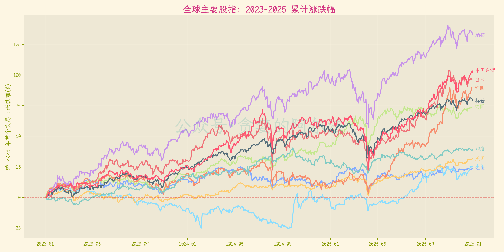
第二层：国内宏观修复
CPI 同比
低通胀说明居民端需求仍偏冷，温和回升比快速冲高更有利于牛市早期。
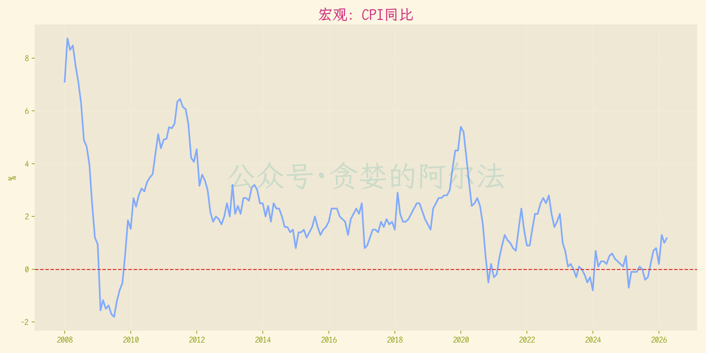
PPI 同比
PPI 从负值区间持续向零轴靠近，代表工业品价格和企业盈利压力开始缓解。
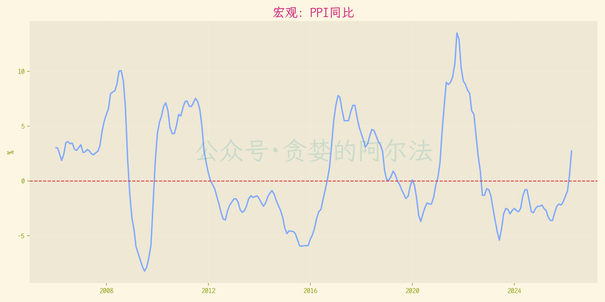
制造业 PMI
50 是荣枯线。连续站在 50 上方，比单月脉冲更有意义。
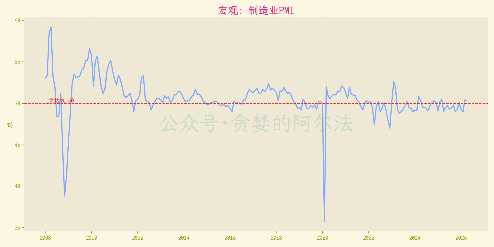
M1-M2 剪刀差
观察钱是继续沉淀，还是开始进入交易状态。剪刀差收窄并向上拐头通常更重要。
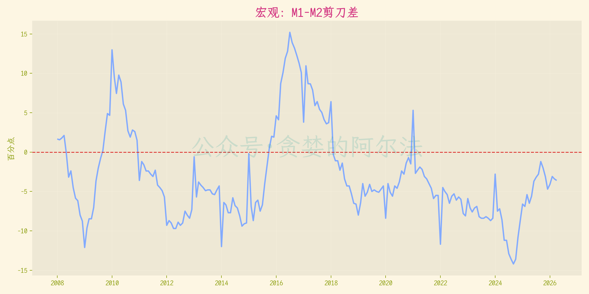
第三层：流动性活化
成交金额与融资强度
成交放大时融资强度同步抬升，说明风险偏好正在回来；如果只有成交放大而融资不跟，市场仍偏谨慎。
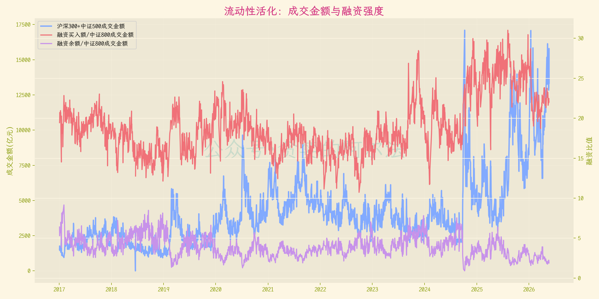
第四层：市场宽度扩散
中证800宽度仪表
指数上涨时，MA20 宽度是否维持在 50% 以上，60 日创新高比例是否同步抬升。
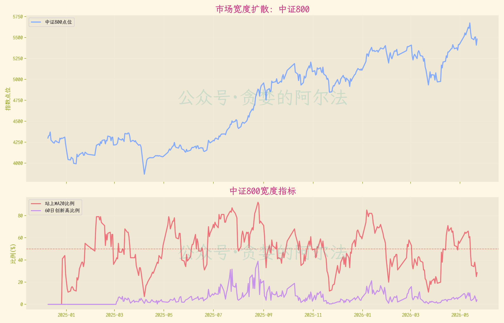
沪深300宽度仪表
大盘权重上涨时，内部宽度是否跟得上；如果指数涨、宽度跌，就要警惕只是权重护盘。
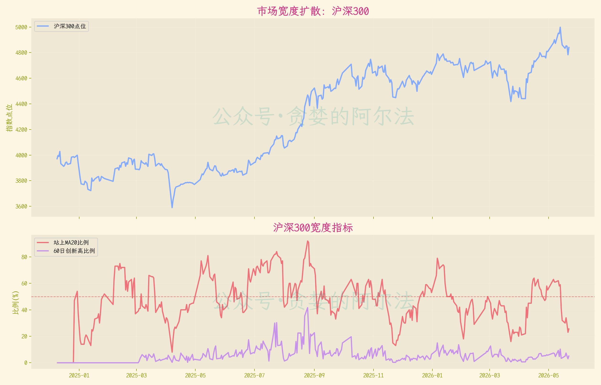
中证500宽度仪表
中盘成长股是否扩散，尤其是指数突破时创新高比例有没有抬升。
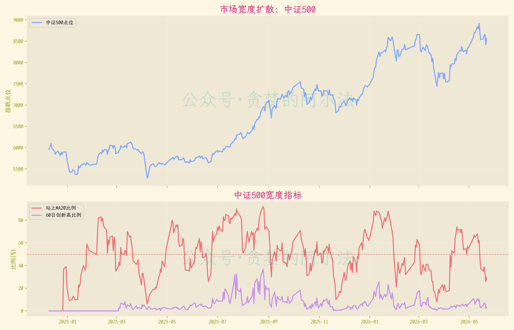
第五层：估值与情绪空间
中国10年期国债收益率与中证800走势
低利率配合指数上行，通常说明权益资产仍有比较优势。
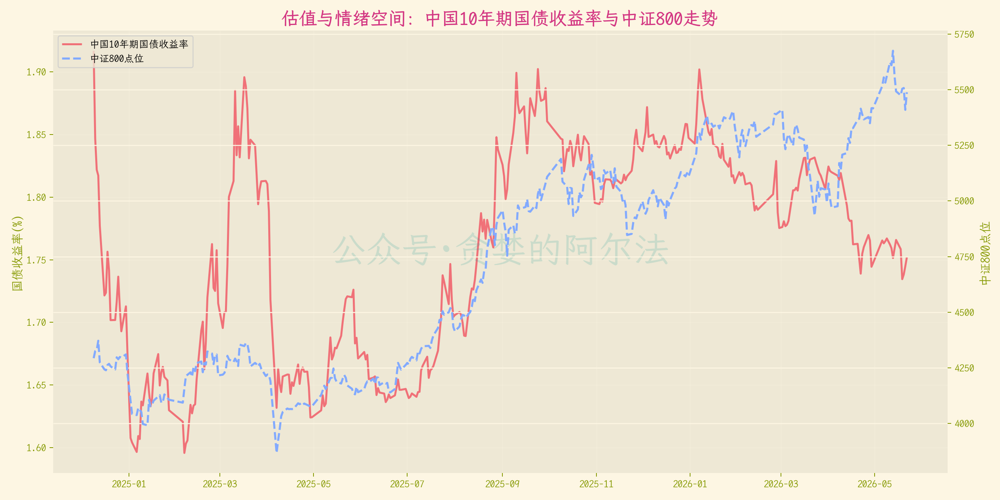
沪深300股债收益差与指数走势
指数上涨后股债收益差是否仍在高位；如果差值快速压缩，说明估值优势正在被上涨消耗。
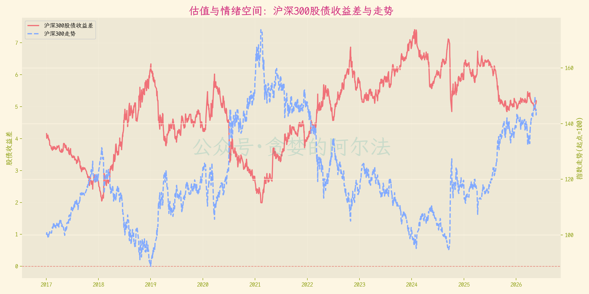
中证500股债收益差与指数走势
中盘股上涨后是否仍有估值补偿；如果指数没涨多少但股债收益差维持高位，修复空间仍值得观察。
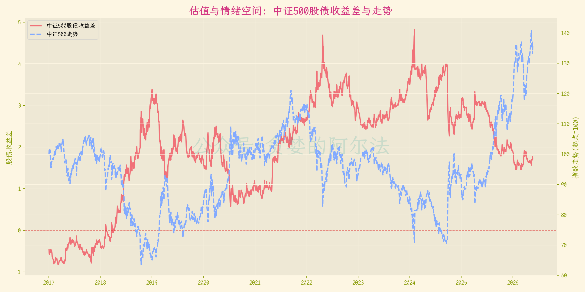